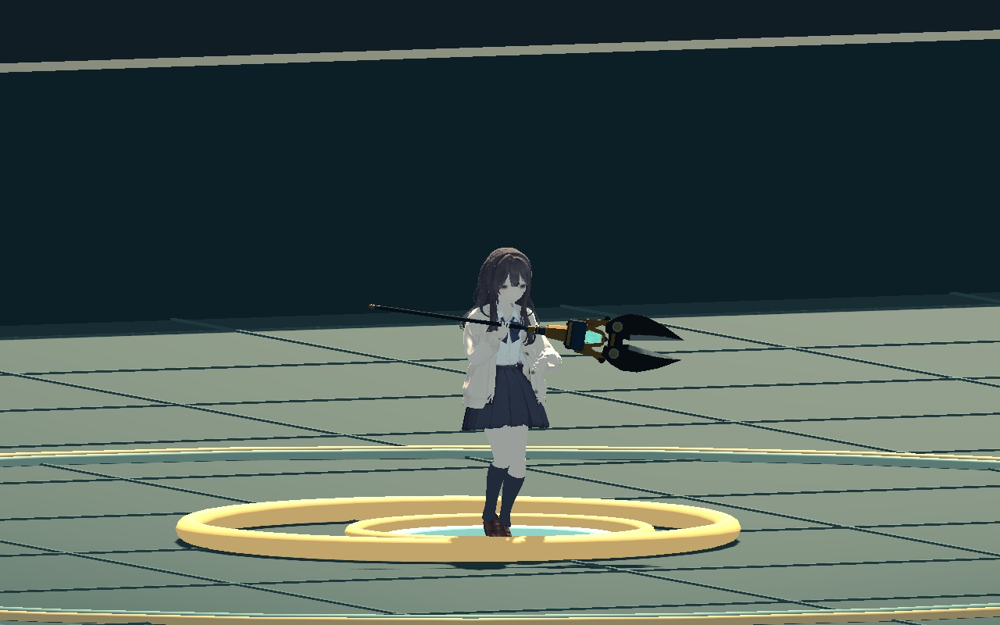
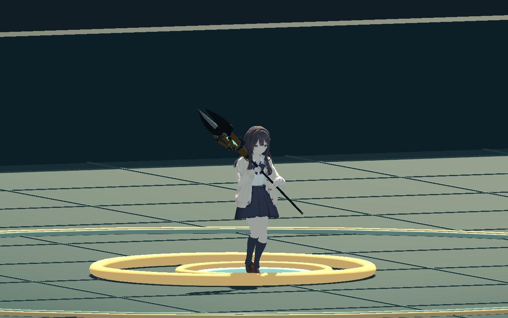

팔의 비틀림이 다른 대기·달리기 자세를 뼈별로 섞으면서, 중간에 지팡이가 크게 한 바퀴 돌았습니다.
전환 중에는 지팡이 방향과 양손의 위치를 함께 연결합니다. 기존 대기와 달리기 동작은 그대로입니다.


비교 장면 불러오는 중…
확인한 내용 · 1,514개 전환 샘플에서 손 간격 오차 최대 0.052mm. 팔 길이와 하체·의상 동작 유지.
신규 검사와 기존 공격·캐스팅·경직·쓰러짐·볼트커터 회귀 1,271개 통과, 실제 엔진 455장 캡처.
기본 지팡이·공구·재질은 a8b8cfb로 커밋했습니다. 이 이동 전환 수정은 사용자가 선택한 시험판 수정본입니다.
두 버전은 실제 게임에서 같은 이동 입력과 위치·방향·재생 시계를 사용했습니다. 정면과 비스듬한 시점은 확대 비교, 실제 크기는 기존 1.75배 카메라입니다. 기존 게임 조명을 사용합니다. 비교 재생은 마지막 프레임에서 멈춥니다.
변신복을 새로 촬영한 검사, 모든 의상 접촉 해결, 최종 성능 검증은 포함하지 않습니다. 검증 매니페스트 · 전환 검사 · 실제 게임 프레임 기록